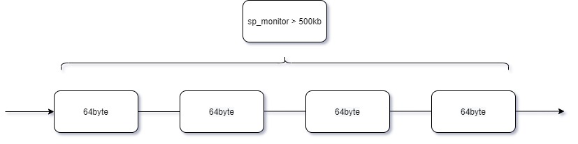
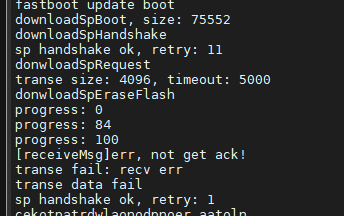

qcom qcm2290 apsp串口功能调试
记录一下
APSP串口不通
目前AP端的串口程序都是A6650项目可用的，但是在ABL阶段使用流控功能出现握手失败。
原因是SP端RTS功能未打开，当AP发送时RTS未拉低，SP端发送，AP不接收。
串口配置750k波特率并增加宏控
--- a/UM.9.15/bootable/bootloader/edk2/AndroidBoot.mk
+++ b/UM.9.15/bootable/bootloader/edk2/AndroidBoot.mk
@@ -129,6 +129,12 @@ else
CLANG35_GCC_TOOLCHAIN := $(ANDROID_TOP)/prebuilts/gcc/linux-x86/aarch64/aarch64-linux-android-$(TARGET_GCC_VERSION)
endif
+#[feature]-add-begin xielianxiong@paxsz.com,for M9200 abl
+ifeq ($(M9200),true)
+ M9200 := M9200=1
+endif
+#[feature]-add-end xielianxiong@paxsz.com,for M9200 abl
+
# ABL ELF output
TARGET_ABL := $(PRODUCT_OUT)/abl.elf
@@ -167,4 +173,5 @@ $(TARGET_ABL): $(LOCAL_ABL_SRC_FILE) | $(ABL_OUT) $(INSTALLED_KEYSTOREIMAGE_TARG
CLANG_GCC_TOOLCHAIN=$(CLANG35_GCC_TOOLCHAIN)\
TARGET_ARCHITECTURE=$(TARGET_ARCHITECTURE) \
BOARD_BOOTLOADER_PRODUCT_NAME=$(BOARD_BOOTLOADER_PRODUCT_NAME) \
- USERDATAIMAGE_FILE_SYSTEM_TYPE=$(USERDATAIMAGE_FILE_SYSTEM_TYPE)
+ USERDATAIMAGE_FILE_SYSTEM_TYPE=$(USERDATAIMAGE_FILE_SYSTEM_TYPE) \
+ $(M9200)
diff --git a/UM.9.15/bootable/bootloader/edk2/MdePkg/Library/UartQupv3Lib/UartXBL.c b/UM.9.15/bootable/bootloader/edk2/MdePkg/Library/UartQupv3Lib/UartXBL.c
index bea319ce553..9cf597fcd2c 100755
--- a/UM.9.15/bootable/bootloader/edk2/MdePkg/Library/UartQupv3Lib/UartXBL.c
+++ b/UM.9.15/bootable/bootloader/edk2/MdePkg/Library/UartQupv3Lib/UartXBL.c
@@ -87,6 +87,7 @@ static const CLOCK_SETTINGS baud_table[] =
{
// bit_rate, input_freq, divider
{ 115200, 7372800, 64 },
+ { 750000, 96000000, 128 },
{ 1500000, 96000000, 64 },
{ 3000000, 96000000, 32 },
{0}
@@ -1010,7 +1011,11 @@ uart5_initialize(void)
{
uart_open_config uart5_c;
+#ifdef M9200
+ uart5_c.baud_rate = 750000;//3000000;
+#else
uart5_c.baud_rate = 3000000;
+#endif
uart5_c.parity_mode = UART_NO_PARITY;
uart5_c.num_stop_bits = UART_1_0_STOP_BITS;
uart5_c.bits_per_char = UART_8_BITS_PER_CHAR;
--- a/UM.9.15/bootable/bootloader/edk2/QcomModulePkg/QcomModulePkg.dsc
+++ b/UM.9.15/bootable/bootloader/edk2/QcomModulePkg/QcomModulePkg.dsc
@@ -154,6 +154,11 @@
!if $(USERDATAIMAGE_FILE_SYSTEM_TYPE)
GCC:*_*_*_CC_FLAGS = -DUSERDATA_FS_TYPE=\"$(USERDATAIMAGE_FILE_SYSTEM_TYPE)\"
!endif
+#[feature]-add-begin xielianxiong@paxsz.com,20221202,abl define M9200
+ !if $(M9200) == 1
+ GCC:*_*_*_CC_FLAGS = -DM9200
+ !endif
+#[feature]-add-end xielianxiong@paxsz.com,20221202,abl define M9200
[PcdsFixedAtBuild.common]
diff --git a/UM.9.15/bootable/bootloader/edk2/makefile b/UM.9.15/bootable/bootloader/edk2/makefile
index 580b3cc7b29..fbafb095449 100644
--- a/UM.9.15/bootable/bootloader/edk2/makefile
+++ b/UM.9.15/bootable/bootloader/edk2/makefile
@@ -117,6 +117,12 @@ export LLVM_ENABLE_SAFESTACK := $(LLVM_ENABLE_SAFESTACK)
export LLVM_SAFESTACK_USE_PTR := $(LLVM_SAFESTACK_USE_PTR)
export LLVM_SAFESTACK_COLORING := $(LLVM_SAFESTACK_COLORING)
+#[feature]-add-begin xielianxiong@paxsz.com,20221202,abl define M9200
+ifeq "$(TARGET_PRODUCT)" "bengal_32go"
+export M9200 := true
+endif
+#[feature]-add-end xielianxiong@paxsz.com,20221202,abl define M9200
+
.PHONY: all cleanall
all: ABL_FV_ELF
@@ -157,6 +163,7 @@ ABL_FV_IMG: EDK_TOOLS_BIN
-D ENABLE_SYSTEMD_BOOTSLOT=$(ENABLE_SYSTEMD_BOOTSLOT) \
-D RW_ROOTFS=$(RW_ROOTFS) \
-D USERDATAIMAGE_FILE_SYSTEM_TYPE=$(USERDATAIMAGE_FILE_SYSTEM_TYPE) \
+ -D M9200=$(M9200) \
-j build_modulepkg.log $*
cp $(BUILD_ROOT)/FV/FVMAIN_COMPACT.Fv $(ABL_FV_IMG)
sp下载软件失败(发送失败)
看看sp下载软件逻辑：
fastbootcmds.c:
* CmdFlash
└── if(is_sp_partition(PartitionName)) //判断下载名称是否为cfg、sp_boot、sp_reboot、sp_monitor、exsn、sp_mac、sp_time、sp_test
├── if(StrnCmp(PartitionName, L"exsn", StrLen(L"exsn")) == 0)
│ └── verify_pax_image(mFlashDataBuffer,mFlashNumDataBytes,0) //校验
│ ├── memcpy(ucInfo, addr+len-16, 16); if (memcmp(ucInfo, "SIGNED_VER:00001", 16)) //校验最后16字节是不是SIGNED_VER:00001字符
│ ├── compute_sha(addr,len-284,hash); //计算exsn hash
│ └── RSARecover(&mf_puk[4], 256, &mf_puk[260], 4, (uchar *)pTEncry_Digest, (uchar *)pTDigset); //RSA加解密运算函数
├── if ( (StrnCmp(PartitionName, LPAX_CFG_PARTITION_NAME, StrLen(LPAX_CFG_PARTITION_NAME)) == 0) //#define LPAX_CFG_PARTITION_NAME L"pax_cfg" #define LCFG_PARTITION_NAME L"cfg"
│ ├── verify_pax_image(mFlashDataBuffer,mFlashNumDataBytes,0)
│ └── Status = HandleRawImgFlash (LPAX_CFG_PARTITION_NAME,ARRAY_SIZE (LPAX_CFG_PARTITION_NAME),mFlashDataBuffer, mFlashNumDataBytes);
└── if (sp_download_all(PartitionName, mFlashDataBuffer, mFlashNumDataBytes) < 0)
├── if(409600 > sz)return -1;//sp monitor almost 500KB
├── if(StrnCmp(DownloadName, L"sp_monitor", StrLen(L"sp_monitor")) ==0 )
│ └── downloadSpMonitor(data, sz);
│ └── downloadSpFile(download_file, data, sz);
│ ├── ret = checkSprebootAndHandshake(); //1. shakehand sp 发送X字符
│ ├── ret = donwloadSpRequest(download_file, sz); // 2. download request
│ │ ├── uchar cmd = CMD_DOWNLOAD_REQUEST; //E2下载请求指令
│ │ ├── makePackage(g_tx_buf, cmd, data, sizeof(data)); //发送
│ │ ├── puts_sp(g_tx_buf, len);
│ │ └── receivePackage(cmd, g_rx_buf, &g_rx_index, &g_rx_size); //接收
│ ├── donwloadSpEraseFlash(SP_PARTITION_BACK); // 3. erase back partition E3擦除指令
│ ├── for (i = 0; i < cnt; i++) ret = donwloadSpTranseData(pack_index, data+i*block_size, block_size) //4. download transefile
│ │ ├── uchar cmd = CMD_TRANSE_FILE;
│ │ ├── makePackage(g_tx_buf, cmd, tmp_buf, size);
│ │ └── puts_sp(g_tx_buf, len);
│ │ └── pax_serial_putc(tx_buff, len);
│ │ ├── for (i = 0; i < count; i++) len = uart5_write((UINT8*)buf+i*TXFIFO_SIZE,TXFIFO_SIZE); MicroSecondDelay(250);//3M,3000000// #define TXFIFO_SIZE 64 所有数据64个byte为一个包 ，for循环发送
│ │ ├── len = uart5_write((UINT8*)buf+count*TXFIFO_SIZE,bytes_to_tx % TXFIFO_SIZE); //最后一个64byte包
│ │ └── MicroSecondDelay(250);//3M,3000000 延迟0.25ms
│ ├── ret = donwloadSpCheckTranseFinish(); //5. check transe finish 检查是否传输完成
│ ├── ret = donwloadSpEraseFlash(SP_PARTITION_TARGET);//6. erase target partition
│ └── ret = donwloadSpWrite2Flash(); // 7. write to flash(target)
│ └── uchar cmd = CMD_WRITE_FILE_TO_FLASH; // E4指令， sp将串口接收数据下载到flash
├── else if(StrnCmp(DownloadName, L"sp_boot", StrLen(L"sp_boot")) ==0 )
│ └── downloadSpBoot(data, sz);
├── pax_serial_flush(); //缓冲区清空
│ └── pax_serial_getc(buf, 512);
│ └── uart5_read((UINT8 *)buf, bytes_to_rx);
└── pax_sp_reset(); //sp复位
├── TLMMProtocol->GpioOut((UINT32)EFI_GPIO_CFG(32, 0, GPIO_OUTPUT, GPIO_NO_PULL, GPIO_8MA), GPIO_HIGH_VALUE);
└── TLMMProtocol->GpioOut((UINT32)EFI_GPIO_CFG(32, 0, GPIO_OUTPUT, GPIO_NO_PULL, GPIO_8MA), GPIO_LOW_VALUE);
downloadSpMonitor步骤如下：
shakehand sp 发送握手X字符
download request 发送下载请求包 E2指令
erase back partition E3擦除指令
download transefile 串口传输到sp
check transe finish 检查是否传输完成
erase target partition
write to flash(target) E4指令，sp将串口接收数据下载到flash
我们sp_monitor大小必须大于500kb，将分成数个64byte的数据包依次发送，如下结构：

按照之前调试下载功能，发现下载过程会失败，打印如下：
AP：

SP：

我们从log上看：
AP/SP握手成功，且数据都已经发出去，AP发完没有收到SP ACK。
SP端收到E2/E3/E4命令，接收到传输文件，提示timeout了。
CMD_DOWNLOAD_REQUEST = 0xE2,
CMD_ERASE_FLASH = 0xE3,
CMD_TRANSE_FILE = 0xE4,
逻辑分析中得知软件发送500字节数据，实际上只发送了200多个字节，也就是说还有200多没法出去，我们猜测串口发送就像装子弹一样，当一发子弹装上，打完了才能装第二发子弹，如果一发装完还没打完就装下一发，这样就造成第一发子弹没打出去，装子弹的过程就像串口FIFO方式发送数据时填充fifo过程，正确做法是等待fifo中数据都传输完成，再进行下一次填充fifo，参考下面文章，一般串口都有判断fifo是否为空和是否传输完成标志：
TXE：发送数据寄存器为空 (Transmit data register empty)
0：数据未传输到移位寄存器
1：数据传输到移位寄存器
TC：发送完成 (Transmission complete)
0：传送未完成
1：传送已完成
UART发送丢失数据(参考)
UART发送丢失数据很多工程师都遇到过，通常情况下是传输未完成的原因。 HAL库已经有几年了，但还是有很多工程师都使用标准外设库，这时如果自己封装接口不当，就会存在发送最后一字节数据丢失的问题。 1.UART传输未完成导致数据丢失
如下代码，只考虑非空，但实际传输并未完成。
void UART_SendByte(uint8_t Data)
{
while(RESET == USART_GetFlagStatus(USART1, USART_FLAG_TXE));
USART_SendData(USART1, Data);
}
但发送非空不代表发送完成，虽然在某些场合更高效，但某些场合就会导致数据丢失。
比如：使用此函数发送之后进入休眠、关闭接收端设备电源等情况下。
解决办法： 等待发送完成：
void UART_SendByte(uint8_t Data)
{
while(RESET == USART_GetFlagStatus(USART1, USART_FLAG_TXE));
USART_SendData(USART1, Data);
while(RESET == USART_GetFlagStatus(USART1, USART_FLAG_TC));
}
如果使用标准外设库，要根据实际情况封装函数，比如发送超时。
或者使用HAL封装的接口，代码包含判断传输完成：
HAL_StatusTypeDef HAL_UART_Transmit(UART_HandleTypeDef *huart, uint8_t *pData, uint16_t Size, uint32_t Timeout)
解决方案
暂时没有找到qcm2290平台fifo是否为空和是否传输完成标志，只能通过延时的方式。
uint32 pax_serial_putc(void* buf, uint32 bytes_to_tx)
{
//[feature]-add-begin xielianxiong@paxsz.com,20220910,for txfifo only 64byte
#define TXFIFO_SIZE 64
uint32 i;
uint32 len = 0;
uint32 totalcount = 0;
uint32 count = bytes_to_tx / TXFIFO_SIZE;
//DEBUG((EFI_D_ERROR, "victor, bytes_to_tx = %d,count = %d,\n", bytes_to_tx,count));
for (i = 0; i < count; i++) {
len = uart5_write((UINT8*)buf+i*TXFIFO_SIZE,TXFIFO_SIZE);
totalcount = totalcount + len;
#ifdef M9200
MicroSecondDelay(1300);//750000
#else
MicroSecondDelay(250);//3M,3000000
#endif
}
len = uart5_write((UINT8*)buf+count*TXFIFO_SIZE,bytes_to_tx % TXFIFO_SIZE);//size;
totalcount = totalcount + len;
//DEBUG((EFI_D_ERROR, "victor, totalcount = %d,len = %d,\n", totalcount,len));
#ifdef M9200
MicroSecondDelay(2300);//750000
#else
MicroSecondDelay(250);//3M,3000000
#endif
return totalcount;
//[feature]-add-begin xielianxiong@paxsz.com,20220910,for txfifo only 64byte
}